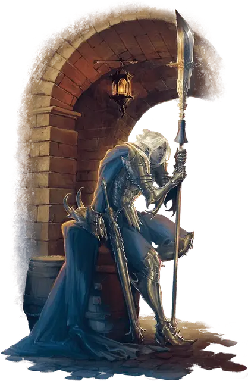

Верин Телисс
Verin Thelyss
Средний Гуманоид (Дроу, Эльф), законно-добрый, именной НИП

Класс Доспеха 17 (полулаты)
Хиты 84 (13к8 + 26)
Скорость 30 футов
| мод | спас | ||
|---|---|---|---|
| СИЛ | 18 | +4 | +7 |
| ЛОВ | 15 | +2 | +2 |
| ТЕЛ | 14 | +2 | +5 |
| мод | спас | ||
|---|---|---|---|
| ИНТ | 13 | +1 | +1 |
| МДР | 14 | +2 | +5 |
| ХАР | 16 | +3 | +3 |
Навыки Атлетика +7, Восприятие +5, История +4
Чувства тёмное зрение 120 футов, пассивное Восприятие 15
Языки Общий, Подземный, Эльфийский
Опасность 5 (1800 опыта)
Бонус мастерства +3
Особенности
Наследие фей. Верин совершает с преимуществом спасброски от очарования, и магия не может его усыпить.
Чувствительность к солнечному свету. Находясь на солнечном свету, Верин совершает с помехой броски атаки, а также проверки Мудрости (Восприятие), полагающиеся на зрение.
Действия
Мультиатака. Верин совершает три атаки Глефой.
Глефа. Рукопашная атака оружием: +7 к попаданию, досягаемость 10 футов, одна цель. Попадание: 9 (1к10 + 4) рубящего урона.
Ручной арбалет. Дальнобойная атака оружием: +7 к попаданию, дистанция 30/120 футов, одна цель. Попадание: 5 (1к6 + 2) колющего урона плюс 22 (4к10) урона ядом.
Использование заклинаний. Верин может накладывать следующие заклинания, используя Харизму в качестве базовой характеристики (Сл спасброска от заклинания 14):
• Неограниченно: пляшущие огоньки [dancing lights];
• 1/день каждое: огонь фей [faerie fire], тьма [darkness], левитация [levitate] (только на себя).
Бонусные действия
Манифест Эхо. Верин магическим образом создает Эхо — полупрозрачный серый объект, похожий на него. Эхо появляется в свободном пространстве, которое Верин может видеть в пределах 15 футов. Пока существует Эхо, Верин выбирает, исходит ли каждая из его атак из его пространства или из пространства Эха. В ход Верина, Эхо может перемещаться в соответствии с желаниями Верин. У Эха 17 КД и 1 хит. Во всём остальном оно использует статистику Верина. Эхо существует 1 минуту или пока оно не будет уничтожено, пока Верин не закончит свой ход более чем в 30 футах от Эха, пока Верин не проявит другое Эхо или пока Верин не окажется недееспособной.
Передислокация. Верин волшебным образом меняется местами со своим Эхо.
Реакции
Парирование. Верин добавляет 3 к своему КД против одной рукопашной атаки, которая поразит его. Для этого Верин должен видеть нападающего и держать рукопашное оружие.
Описание
Для жителей Баззозана Верин — маяк надежды среди тьмы, окутывающей город. Но груз ответственности окрашивает меланхолией светлое и юное обличье Верина. Он заботится о городе, который поклялся защищать, но устал от непрекращающейся угрозы со стороны Пика Предателей.